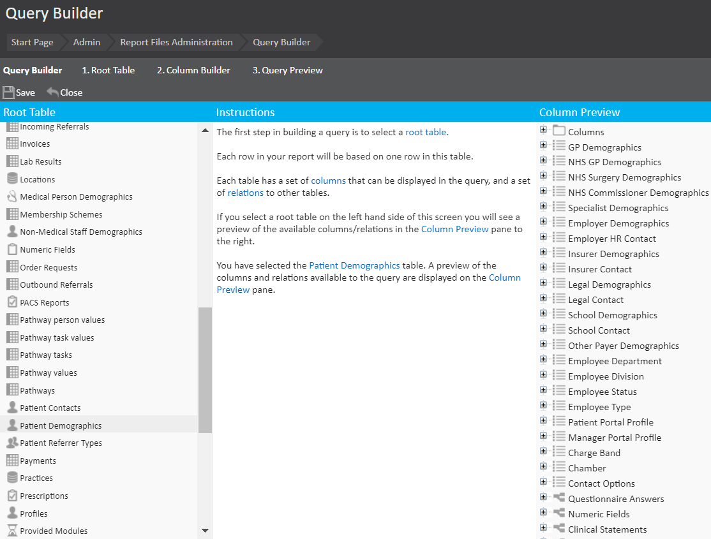

This article describes the logic behind and the manner of taking the first step in the process of building any report - selecting a Root Table.
The report query builder is located under Admin > Report management.
The screen you are initially presented with is the repository of the queries in your system.
You will find a range of queries are already present here by default, created by the technical team in your system setup
Launch the query builder by clicking New Query on the top bar.
You will be presented with a screen similar to the one below. The Instructions sections in the centre of the screen will provide you with an overview of what can be achieved here.

While the report system is extremely flexible with the information that can be retrieved, all reports begin by selecting a Root Table. This table will form the basis on which the rest of the report is built and can best be defined as the data type required for the rows in your table
For example, if you are looking for a list of patients you would select the Patient Demographics root table, likewise, if you are looking for a list of invoices, you would select the Invoices root table.
Selecting the root table will update the Column Preview section to the right-hand side.
The column preview section allows you to see all the data that the root table has access to. For this example the Patient Demographics root table has been selected, so that data on patients can be received. You will likely see (depending on your root table) three icons, they are:
- A folder containing columns
- A link to another table with a one-to-one ratio, for example, in the ‘Patient Demographics’ table you will find ‘Employer Demographics’ is a one-to-one relationship as a patient can only have one listed employer.
- A link to another table with a one-to-many ratio, for example, in the ‘Patient Demographics’ table you will find ‘Appointments’ is a one-to-many relationship as a patient can have many appointments.